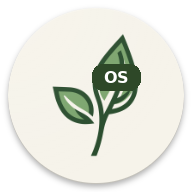

安卓 Minecraft 基岩版启动器 · 当前版本 v1.4.5
Minecraft 官方从 2025 年 3 月起不再发布 ARM32 版本，商店里的新版只含 64 位库。纯 32 位 CPU 的手机装不了这种官方新版，这是硬件位宽决定的，跟启动器无关。
32 位手机请使用仍然带 armeabi-v7a 库的游戏包，模组也要选 armv7 版本；启动器会按手机位宽提取和加载，不会再把 64 位库错放到 32 位目录。
Android 9 及以上；arm64-v8a 或 armeabi-v7a；建议留 2GB 以上空间。
邮箱：2416444244@qq.com
QQ 群：1104692081